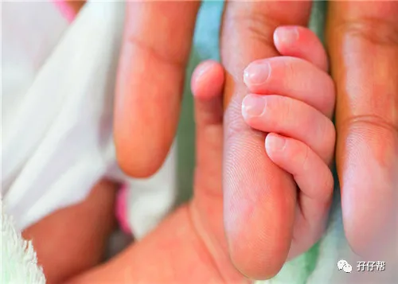
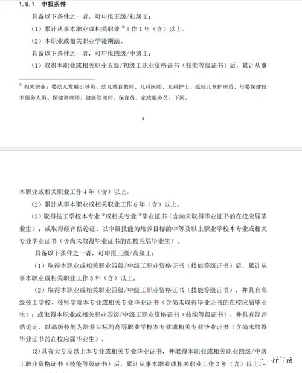
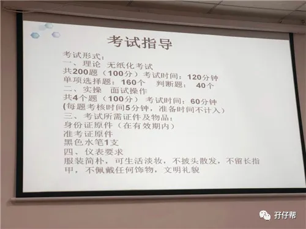
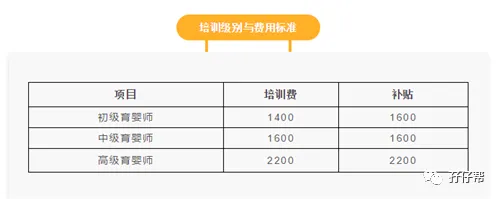
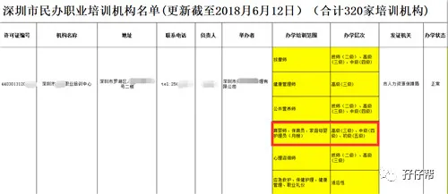
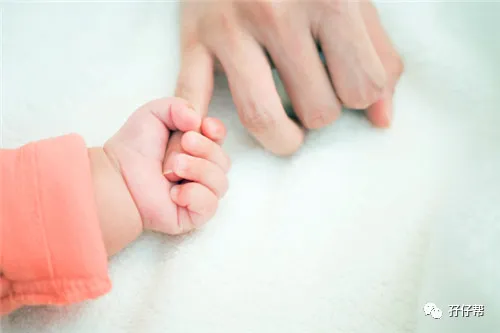
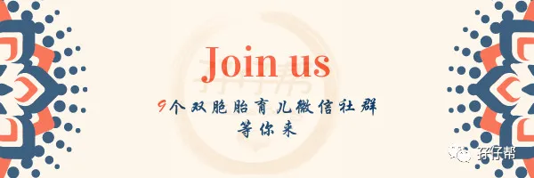

文|圆圈妈，一个文思如尿崩的双胎妈妈
图|来自网络，如有侵权，请联系删除
· 正 · 文 · 来 · 啦 ·
上期推文《请一个育儿嫂有多难，会带养双胞胎的那种》，收到很多父母们的留言咨询育婴师证怎么考，今天的文章来解答！
【01】
育婴师证在双胞胎家庭的意义？
这就看你怎么看待了？
我是奔着能学到东西，对自己有用，对公号优质内容的输出有帮助才去考的，至于对你有啥意义呢？我觉得你可以考虑下这4点。
ℹ掌握科学规范的育儿理念并学以致用
▲培训课老师的实操演示▲
面对即将到来的两位家庭新成员，若你不打算请育儿嫂，想要自己亲力亲为，那作为新手妈妈的你若不想将来掉入地狱模式，育儿岗前培训是必须滴！
通过育婴师专业理论知识的学习和技能训练，能够学习到幼儿心理及生理发育规律、日常生活照料及护理保健等方面的基本知识，能够科学地对婴幼儿的饮食、睡眠、动作技能、智力开发、社会行为和人格发展进行教育训练。
倘若你正好孕期休假在家，妊娠状况良好，闲着无聊，那么考此证无疑是明智之举！
ℹ助你找到靠谱的育儿嫂
若你打算请育儿嫂，那更应该要考这个证。
上文提到家政行业水很深，在这样鱼龙混杂的背景下请一个靠谱的育儿嫂，除了有钱还要碰运气，倘若对这个行业不了解，很容易被对方牵着鼻子走，坑你没商量！
正所谓“知己知彼，方能百战不殆”
想要找到合适的月嫂，你得知道她可以做什么，应该做什么，怎样做才是科学规范的。
经历过考证过程，你会对育儿嫂的工作有大致了解，这样你就会心中有数，不至于一头雾水，这会帮助你在面试育儿嫂时，不需废话，不用纠结，只要通过一番沟通交谈，就能看出来者是“何方神圣”？还是“何方妖孽”？
ℹ职场之路，多一个选择
辞职在家带娃，偶有闲情的全职妈妈请注意，若你担心告别职场太久，以前的工作做不来，希望寻求新的职业方向，那考此证绝对会给你重返职场加分不少。
尤其是在你有丰富的养娃育儿的实际经验前提下，只要你对从事育婴工作感兴趣，持证上岗，重返职场，几乎0障碍，0压力！
可选职业有很多，如进入幼儿园，亲子园，托幼机构，早期教育机构从事幼教，或者进入家庭，传播科学育婴的理念，或者像圆圈妈一样，开公众号分享个人育儿经验，把理论与实际相结合，提供育婴个性化服务。
即便你不CARE那点工资，你完全可以现学现卖，把科学的早期教育及体能智能开发方法应用在双胞胎孩子的身上。
ℹ某种程度上可避免很多家庭矛盾
总体而言，家庭矛盾（特指婆媳关系问题），大多是因育儿观念不一致导致的一些列小摩擦而引发的。
家有双胞胎总免不了需要长辈们帮忙，倘若老一辈还是沿用老旧过时的带娃模式，必定会给我们这一届崇尚科学育儿理念的的父母们造成不小的困扰。
与我同期培训的学员中有一48岁年轻奶奶，担心与儿媳的育儿观念有冲突， 于是她暂别广场舞，拾起了书本，走进了课堂，虚心学习婴幼儿科学照料，护理和教育知识…
倘若参与照顾双胞胎的看护人都能接受全面系统科学的技能培训，那诸如“火星撞地球”此类的大件事的发生率会大大降低。
毕竟，大家初衷都是为了孩子，只是表达方式不一样罢了！若有一套大家都认同的育儿标准并参考执行，何乐而不为呢？
【02】
育婴师证怎么考？容易吗？
问题来了，怎么拿下这个证？接下来以Q&A的形式，简要讲解下！
Q:育婴师职业等级
A:分3个等级：
育婴员（国家职业资格五级）/初级工，
育婴师（国家职业资格三级）/中级工，
高级育婴师（国家职业资格一级）/高级工
Q:报考条件
A：要求比较多，如图所示🔽
✅解析：其实很简单，看看自己的学历是不是大专以上，是不是相关专业？如学前教育，护理学，早期教育等，若都不是，那只能先报考初级的，等达到相应从业经验年限后，方可报考中级和高级。
我是英专，只能从初级开始！拿的证书属于国家职业资格五级，严格上讲，不算育婴师，顶多是个育婴员，具备从事相关职业的能力，但经验有限！
Q：可以自己报考吗
A: 这个考证不像成人高考，即使不报培训班也能通过教育局的报名通道取得考试资格和准考证号。
考育婴师资格证，必须找育婴师正规培训机构，接受专业系统的培训，达到标准规定学时数方可报考，个人不能单独报考！
Q:考试形式
A: 分理论知识考试和技能考核。
理论知识考试以笔试、机考为主，技能考核主要采用现场操作、模拟操作等方式进行。理论知识考试、技能考核均实行百分制，成绩皆达60分（含）以上者为合格。
✅解析：机考只有选择题和判断题，类似于我们考驾照时的科目一，在电脑上完成笔试部分的答题，实操是给出考题，模拟操作，“一对四”，1个考官，4个考生。
Q:考证难吗
A：真心话，不难！
培训机构会给你考试大纲，划重点…只要你会简单的电脑操作，能看懂26个字母，能读懂中文意思，愿意花时间按照培训机构的题库备考，多看书，多刷题，上培训课，基本上都能通过！
实操也不难，线下培训课会针对所有考题全部过一遍，大概是13个考题，从中抽4个题目考核！
Q：考证费用
A：说到考证费用，这里有个消息必须告诉你！
拿到育婴师证，若符合相关条件还可以申请国家补贴，享受政府技能晋升补贴，等于这个证是免费考！具体可咨询当地的社会保障局。
▲以上是培训机构公示的费用和补贴▲
Q:去哪里找正规培训机构
A：以深圳地区为例，登录深圳市人力资源保障局网站，查询深圳市职业技能鉴定机构名单。
▲职业技能鉴定机构名单部分截图▲
这种途径找到的培训机构是最靠谱的！那些天天骚扰你，给你灌鸡汤的招生机构，基本上可以拖黑了！
ℹ小插曲：深圳人社局公布的培训机构名单，只要是办学培训范围有育婴师的机构，我几乎都咨询过，遗憾的是，国家级的育婴师培训班深圳目前暂不开班！
我最后参加了广州一家培训机构5月份的育婴师考试，并取得证书！（为避免广告嫌疑，此处不透露培训机构名称。）
注意，以上是坐标在深圳，考证在广州的圆圈妈考育婴师证的经历，各地对育婴师证的报考政策不一样，具体请以当地情况为准，大抵上可以尝试以下3种途径：
进入各地“xx本地宝”的公众号查询，关键词【育婴师】
登录所在城市的人社局官网，查询相关信息。
拨打当地的12333详细咨询，选人工服务，咨询“育婴师培训”
【03】
获证感言
虽然培训老师说考此证简单过喝水，但我还是像当年考专业英语那样用心对待。
晚饭后，圆圈坐沙发上看绘本，我就坐边上做题，刷题库，从深圳大老远地跑去广州，参加线下培训课，观摩讲师拿着人偶娃娃模拟实操….
▲培训课老师的实操演示▲
除了希望顺利拿证，也是希望肚里多一些墨水，可以在孖仔帮公众号上输出更多优质科学的育儿干货，帮助更多双胞胎家庭。
问题来了，圆圈妈是个合格育婴师吗?
...我的证是合格的，千真万确的！但我没有从业经验，说专业还谈不上，而且我的志向不在这！
我更喜欢用走心的文字，凭借接地气的实战经历，结合靠谱科学的理论知识，通过孖仔帮公众号，为广大父母们传播养育双胞胎的科学理念，提供个性化服务，给予双胞胎父母们实用有效的育儿参谋。
不管是考证还是看育儿类书籍，都希望父母们对孩子们负责，对得起“父母”这个神圣的称呼！
虽然为人父母不需要上岗考试，但不代表我们不需要学习！
关于育婴师证还有哪些问题，欢迎在留言区提出。
-END-
一好文推荐一
一加入社群一
一关注孖仔帮一
觉得此文有点意思嘛？？
请点“在看”









